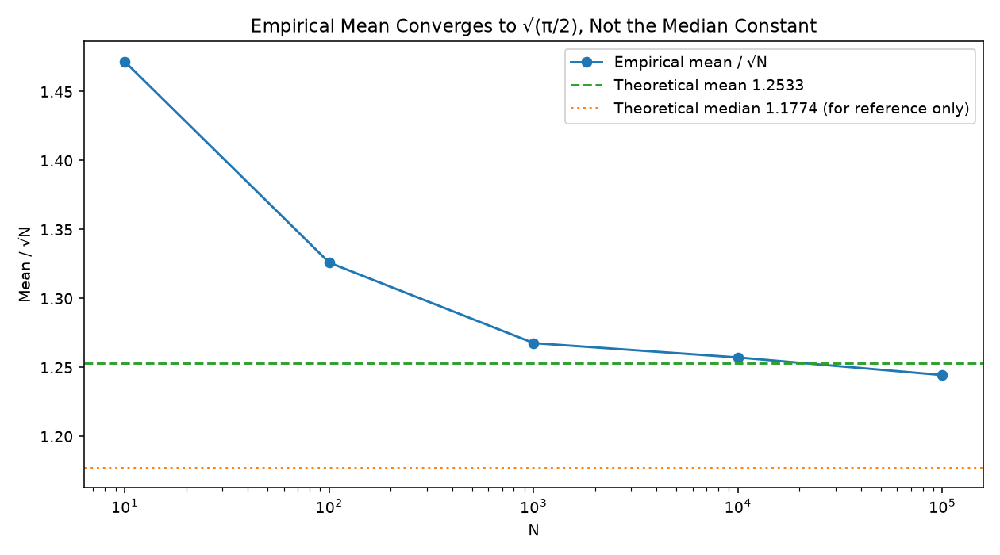
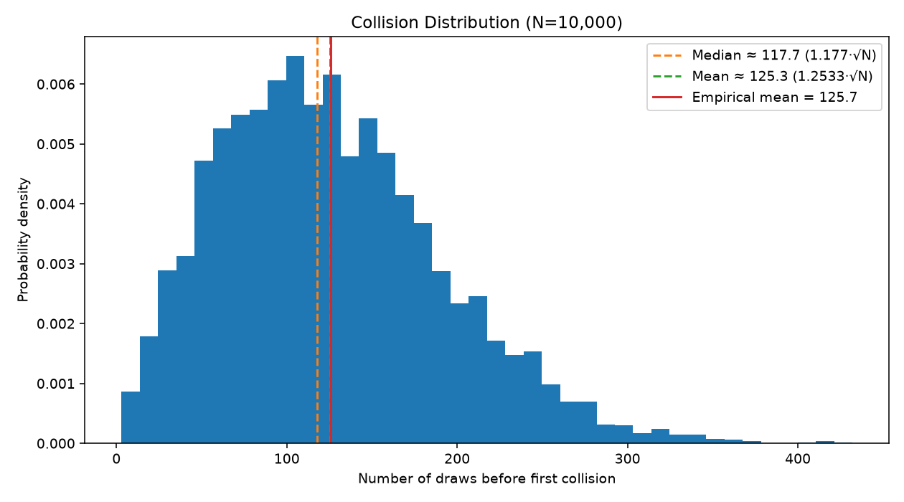

Twenty-three people, 256 bits
In a room of 23 people, including you, there's a better than 50% chance two of them share a birthday. The obvious way to guess at this number is wrong, and it's worth sitting with the wrong answer for a second before seeing why.
The linear intuition says: 365 days in a year, so you'd need somewhere around 365/2 ≈ 183 people before a shared birthday becomes likely. Twenty-three feels absurdly small next to that. But the linear intuition is answering a different question than the one being asked - it's really computing "how many people until someone shares my birthday," which is a much harder thing to arrange than "how many people until any two of them share a birthday." Those sound similar. They're not, and the gap between them is the entire subject of this post.
Pairs, not people
The fix is to stop counting people and start counting pairs. With n people there are n(n-1)/2 possible pairs, and each pair is an independent shot at a 1-in-365 match. At n = 23 that's 253 pairs - 253 independent chances at a 1/365 event is enough to cross 50%, even though 23 people is nowhere near 365.
Made exact: the probability that none of n people share a birthday, out of N possible days, is
P(no collision) = (N/N) · ((N−1)/N) · ((N−2)/N) · ... · ((N−n+1)/N)
For N large relative to n this approximates cleanly to
P(no collision) ≈ e^(−n(n−1)/2N) ≈ e^(−n²/2N)
Set P(collision) = 1 − e^(−n²/2N) equal to 0.5 and solve for n:
n ≈ 1.177 · √N
Plug in N = 365 and you get n ≈ 22.5 - round up, and there's the 23.
Stripped of the birthday framing entirely, the structural fact underneath is: if you're throwing n items into N bins at random, you only need roughly √N items before a collision becomes likely - not N, not N/2. That square-root relationship is the whole engine behind everything that follows, including the part of this post that isn't about birthdays at all.
1.177·√N is a median, though, not a mean - it's the point where collision probability crosses 50%, not the number of draws you should expect on average. Those are different quantities whenever the underlying distribution is skewed, and this one is: most collisions land early, but a long right tail of late arrivals drags the average upward. Solving for the actual expected value gives a second, larger constant:
E[draws until collision] ≈ √(π/2) · √N ≈ 1.2533 · √N
I didn't derive that second constant on paper first. I found out I needed it because the code below refused to agree with the wrong one - see the next section.
From party trick to attack
The birthday paradox stayed a dinner-party curiosity until 1979, when Gideon Yuval published "How to Swindle Rabin," pointing out that a hash function is exactly the birthday setup wearing a different hat. Feed a hash function different inputs and you're throwing items into N = 2^b bins, b being the digest's bit length. Yuval's point: if you can find any two inputs that land in the same bin - any collision at all, not a specific target - you only need about √N attempts, not N. Applied against Rabin's signature scheme of the time, that meant an attacker could prepare two contracts in advance, one honest and one not, engineered to hash identically, get the honest one signed, and the signature would validate on the dishonest one too. The signature never authenticated the document's content - only its hash - and the hash was cheaper to attack than anyone had accounted for.
That's the reason collision resistance and preimage resistance are different security properties with different price tags. Preimage resistance - "given a hash output, find any input that produces it" - is matching one fixed target, and gets no help from the birthday bound: it costs the full 2^b. Collision resistance - "find any two inputs that hash the same" - gets the full birthday speedup, down to roughly 2^(b/2). Halving the exponent sounds modest. It isn't.
Building the collision hunter
The simulation side of this is small: draw random integers from [0, N) with
rng.randrange(N), keep a running set of what's been seen, stop and report
the draw count the moment a value repeats. Run that a few thousand times at a
few different N and look at the numbers.
The first version compared everything - every mean, every convergence chart - against the same constant, 1.177·√N, because that's the number the derivation above actually produces and I hadn't stopped to ask whether "the number the derivation produces" and "the number I'm measuring" were even the same kind of quantity.
They weren't. The empirical mean at N=10,000 came out to 125.72, against a "theory" of 117.70 - a 6.8% gap that didn't shrink as N grew, and didn't look like noise:
| N | empirical mean | mean / √N |
|---|---|---|
| 10 | 4.65 | 1.4716 |
| 100 | 13.26 | 1.3259 |
| 1,000 | 40.09 | 1.2676 |
| 10,000 | 125.72 | 1.2572 |
| 100,000 | 393.52 | 1.2444 |
That ratio column is doing something a rounding error wouldn't do: it's falling steadily, and it's falling toward something, not toward 1.177. A few minutes with the actual derivation - solving for E[T] instead of solving P(T) = 0.5 - turned up √(π/2) ≈ 1.2533, and the ratio column above is very obviously headed there, not toward the median constant at all. Re-plotting the same convergence chart against the correct target makes the mistake impossible to miss - the median constant sits below the whole curve as it comes down, the mean constant runs straight through it:

The distribution itself explains why the two constants disagree at all: it's right-skewed, a long tail of unlucky late collisions pulling the mean above the median.

Two extensions followed once the constant itself was fixed.
Near-collisions. Instead of an exact match, count it as a collision when a new draw lands within tolerance k of any previous draw. Each existing point then shadows 2k+1 values instead of 1, which suggests reusing the same formula against an effective bin count of N/(2k+1):
E[draws] ≈ 1.2533 · √(N / (2k+1))
That's an approximation, not a derivation - it assumes no two existing points' shadows overlap each other, which has to start failing once k gets large enough. Checking it rather than trusting it:
| N | k | actual mean | predicted | error |
|---|---|---|---|---|
| 10,000 | 1 | 73.70 | 72.36 | +1.9% |
| 10,000 | 2 | 56.73 | 56.05 | +1.2% |
| 10,000 | 5 | 38.63 | 37.79 | +2.2% |
| 10,000 | 10 | 28.15 | 27.35 | +2.9% |
| 10,000 | 20 | 20.47 | 19.57 | +4.6% |
| 100,000 | 1 | 228.92 | 228.82 | +0.0% |
| 100,000 | 2 | 178.14 | 177.25 | +0.5% |
| 100,000 | 5 | 119.74 | 119.50 | +0.2% |
| 100,000 | 10 | 87.50 | 86.49 | +1.2% |
| 100,000 | 20 | 62.72 | 61.90 | +1.3% |
The error grows with k, as the shadow-overlap assumption predicts it should - but running it at two N values turned up something the single-N version couldn't show: the same k is a much smaller error at N=100,000 than at N=10,000. k=20 costs +4.6% at N=10,000 but only +1.3% at N=100,000; k=1 is worth +1.9% at N=10,000 and rounds to +0.0% at N=100,000. What's actually predicting the error isn't k on its own, it's k relative to N - specifically something close to √((2k+1)/N), the fraction of the space one draw's shadow covers. That number is 0.064 at (N=10,000, k=20) and 0.0202 at (N=100,000, k=20), a 3.2x drop, roughly matching the error's own drop from 4.6% to 1.3%. More on this in the honest-complication section below, since I have a plausible reason for it, not a derivation.
Real SHA-256, truncated. The simulation is a stand-in for a hash function; the obvious next question is whether an actual one behaves the same way. Truncate real SHA-256 digests to 16 and 20 bits and run the same collision hunter against them. A single collision search is one sample from a distribution, though, not a mean - the first pass through this only ran one trial per bit length, which is an anecdote, not a statistical check. Extended to 30 independent trials per length (a disjoint message namespace per trial, so repeated runs can't quietly rediscover the same collision):
| bits | N | trials | empirical mean | theory (1.2533·√N) | ratio |
|---|---|---|---|---|---|
| 16 | 65,536 | 30 | 309.23 | 320.85 | 1.2079 |
| 20 | 1,048,576 | 30 | 1,333.97 | 1,283.39 | 1.3027 |
Thirty trials is still noisy - roughly 13x noisier than the 5,000-trial simulation runs above, so a ratio anywhere from about 1.1 to 1.4 wouldn't be surprising by chance alone, and both results land inside that band. It's a statistically consistent result, not a tight confirmation, and I'd want a few hundred trials before calling it more than that. What it does establish is qualitative: real truncated SHA-256 collides on the same order, at the same square-root rate, as the uniform-random simulation - nothing about using an actual cryptographic hash instead of Python's random module changed the shape of the result.
Headless JS validation, before any canvas code. The live demo below needed the same collision-finding logic running in the browser, and the rule for that was: port it, run it with no rendering at all, and compare its own mean/√N convergence against the Python numbers above, before writing a single line that draws anything. If the two disagreed, the bug would be in the port, not in the math, and there'd be no point debugging a canvas that was drawing a wrong number correctly.
=== JS PORT: CONVERGENCE (mean / sqrt(N)) ===
N= 10 | mean= 4.64 | mean/sqrt(N)=1.4688 | gap to 1.2533=+0.2154
N= 100 | mean= 13.16 | mean/sqrt(N)=1.3160 | gap to 1.2533=+0.0626
N= 1000 | mean= 40.34 | mean/sqrt(N)=1.2758 | gap to 1.2533=+0.0225
N= 10000 | mean= 126.17 | mean/sqrt(N)=1.2617 | gap to 1.2533=+0.0084
N=100000 | mean= 397.06 | mean/sqrt(N)=1.2556 | gap to 1.2533=+0.0023
Same monotonic approach to 1.2533, same shape as the Python run, close enough on the actual numbers that the small differences are just two different pseudo-random generators sampling the same distribution. Only after that matched did the widget below get built.
The live demo
draws so far 0 50% mark - average wait -
Draws to first collision, across 0 completed runs
The same square-root relationship, at a scale no grid could actually draw. Pick a real digest length - the ones that show up in the next section - and this panel computes the expected number of draws to a collision and checks it against what real hardware can actually do. Nothing here is brute-forced; 2^128 buckets is already too large a number to draw one of, let alone all of them, so everything below is computed directly from the formula, in log space, and only turned into a plain number at the moment it's displayed.
Digest space (N)2^128
Expected draws to a collision≈2^64
| Attacker | Rate | Time to expected collision |
|---|
Why this decided real bit-lengths
The birthday bound isn't a theoretical nicety standards bodies could have ignored - it's a timeline of hash functions being broken almost exactly on schedule with what the bound predicted, once real compute caught up to it.
Rabin and Merkle laid down formal definitions for collision resistance in the late 1970s, around the same window Yuval published the attack that gave the birthday bound teeth. Ivan Damgård formalized the modern requirements for a collision-resistant compression function in 1987, which is the construction almost every hash function since has been built from.
MD5, 128-bit output, has a birthday bound around 2^64 - large in the early 1990s, not forever. By the mid-2000s, 2^64 was within reach of GPU clusters, and Wang et al. (2004) didn't even need the full birthday search: they found structural weaknesses that made real MD5 collisions cheap enough to compute in seconds on ordinary hardware. MD5 was retired for security-critical use shortly after.
SHA-1, 160-bit output, was designed with the birthday bound explicitly in mind - a theoretical collision cost around 2^80, which looked comfortably out of reach for decades. It wasn't structurally sound either: cryptanalysis chipped away at the effective cost for years, and in 2017 Google and CWI Amsterdam publicly produced a real SHA-1 collision (the "SHAttered" attack) using roughly 2^63.1 SHA-1 computations - still birthday-bound territory, made practical purely by enough compute. SHA-1 was formally deprecated for security use shortly after.
The lesson standards bodies drew from both became a hard design rule: to offer k bits of security against collision attacks, a digest needs to be at least 2k bits long - purely from the birthday halving, independent of whatever structural cryptanalysis might further erode it later. A genuine 128-bit security margin, the level considered adequate against realistic attackers including nation-states for the foreseeable future, needs a 256-bit digest. Not an arbitrary round number - 2 × 128, chosen specifically to survive the birthday bound with a full 128 bits of margin left over. SHA-256, SHA3-256 and BLAKE2s-256 all exist at that length for exactly this reason. Switch the panel above to 256-bit and check what that margin actually buys: even the entire Bitcoin network, every ASIC mining it combined, brute-forcing nothing but SHA-256 collisions, comes out to somewhere around the current age of the universe per expected collision. That's not a coincidence of the numbers I picked - it's what "2× the security margin" cashes out to once you plug in real hardware.
Honest complication
Two things here didn't resolve as cleanly as the sections above, and I'd rather say so than round them off.
The near-collision approximation - E[draws] ≈ 1.2533·√(N/(2k+1)) - works, but not at a fixed accuracy. Running it at N=10,000 and N=100,000 rather than just one showed the error tracks something close to √((2k+1)/N), the fraction of the space a single shadow covers, not k by itself: k=20 costs +4.6% at N=10,000 and only +1.3% at the same k when N is 10x bigger. That's consistent with the broken assumption (shadows overlapping each other) - overlap should get rarer as the space gets relatively bigger for the same k - but "consistent with" is doing a lot of work in that sentence. I have a plausible story and two N values that fit it, not a derived correction term, and I didn't go looking for the actual next-order formula.
Non-uniform hashing was the other check: bias the draw distribution (early buckets three times as likely as late ones) and confirm collisions arrive faster than uniform, not slower - which matches the general fact that a uniform distribution maximizes expected time-to-collision among all distributions over a fixed-size support. Confirmed and consistent at every N tested, and also a reminder that "the hash looks random" is doing real work in every derivation above - a hash with any structural bias is weaker than its bit length suggests, for exactly this reason, and the birthday bound as stated is really an upper bound on the attacker's cost, not a guarantee.
Close
The part of this that actually surprised me wasn't the birthday paradox itself - that one's well-worn. It was how easy the median/mean mixup was to make and how long it can survive unnoticed: both constants are "roughly √N," both looked plausible next to the code, and only a convergence chart that refused to sit on the line I'd drawn for it forced the question. The near-collision approximation breaking down predictably, rather than randomly, was the other thing worth keeping - a wrong model that fails in a legible direction is still more useful than a right one nobody checked.